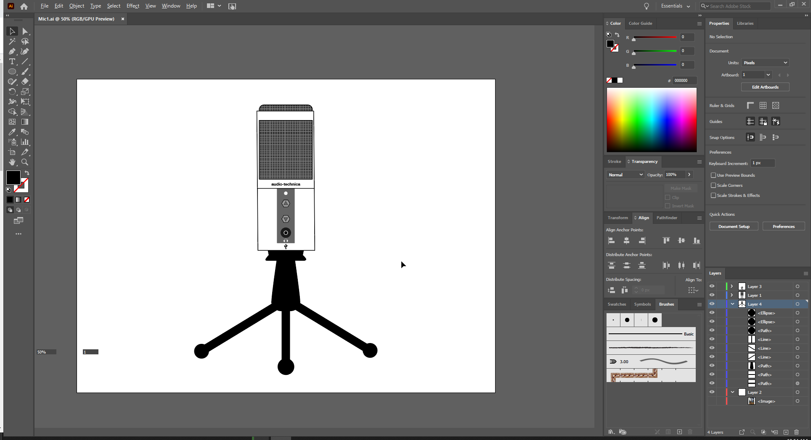
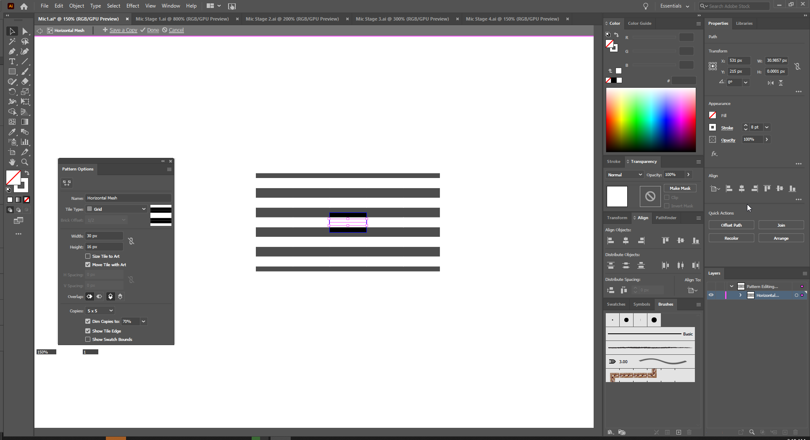
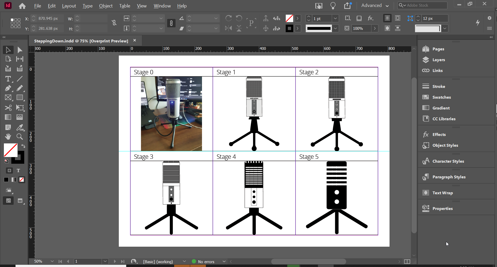
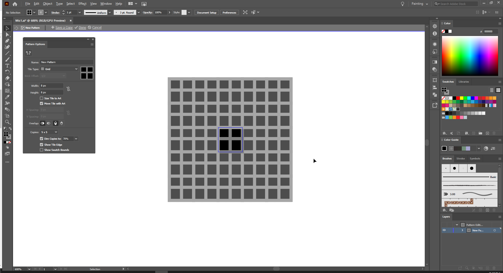

In this post, we perform abstraction on my recording microphone to turn it into a logo! I'll cover my thought process, the tools I used, and adjustments I made post-critique.

For a clearer reference, you can view the pdf HERE.
Goals
My goal for this assignment: For my final abstraction to be a simple yet effective representation of a tripod microphone that is easy to draw.
Tools
Adobe Illustrator
For this assignment, since vector graphics would be used for the abstraction, I used Adobe Illustrator, with extensive use of the pen and shape tools. To make the workspace a little more organised, I utilised layers to separate the different aspects of the microphone in terms of depth.
Using Illustrator to design my Stage 1 abstraction vector illustration.
I must admit my layers aren't as organised as they could be... For future projects, it might help to make more intentional use of the layers and label them appropriately. I also utilised the grouping function to group paths and shapes together (e.g. the Audio Jack and USB icons) so that I can easily adjust them as a whole.
In order to replicate the mesh on my microphone, I went online to learn how to create patterns! So I made patterns for the different microphone meshes.
Designing the microphone mesh pattern for Stage 3 of my abstraction.
I also used the "Save a Copy" function to save different files for the different stages as "Mic Stage 1", "Mic Stage 2", etc. and preserve the different states. This allowed me to easily edit the different stages and place them into InDesign.
Adobe InDesign
To easily divide the product into a grid, I used InDesign! This also helped me easily extract the assignment into an A4 PDF.
Using Adobe InDesign to arrange my abstraction stages into a neat grid.
One neat feature in InDesign was the ability to directly place .ai files, making the process very convenient.
Thought Process
For the first stage, I created a detailed vector replica of the microphone (I didn't include the audio-technica logo in case of copyright, and I felt it wouldn't be necessary later on anyway). It was here where I faced my first obstacle: How should I go about creating the microphone mesh? It wouldn't be efficient to draw it line by line. As such, I learnt how to create Illustrator patterns online and my first ever pattern made using the function was this microphone's mesh pattern in Stage 1.
My first Illustrator pattern: a mesh pattern (essentially like a grid)
For the second stage, I mainly focused on defining the colours of the image - increasing contrast by having just two colours: black and white. The only portion I couldn't do this for yet was where the buttons were attached - to turn it black or white would cause the headphone jack to disappear or buttons to be less contrasted. Aside from this, I also simplified some shapes like the tripod head and base and icons, and replaced the brand name with a black line to simply signify something written there.
I knew that the mesh would be too complex for an icon, so I decided to simplify it in the third stage: horizontal stripes for the inside of the microphone, and vertical stripes for the top mesh. In this stage I also began removing elements I felt were unnecessary for a standing mic representation like the arrows on the buttons, the inside of the USB jack, and the brand. I also further simplified the shape of the tripod head and the icons.
In the fourth stage, I felt the mesh could be even further abstracted - so I made the lines wider. It was here I started to stray a little more away from the original microphone, colouring the top half of the mic black and merging the top mesh with the microphone to simplify its shape. I also decided to colour the buttons black to contrast more starkly with the white background - allowing me to simplify the colour of the buttons' background to white. I only made a minor tweak to the base here, changing the head of the base to a simple block rather than a rounded shape.
In the final stage, I decided to shade the whole microphone black to make it a simple whole shape rather than two segments - easier to process visually. To further simplify the shape, I rounded all the edges of the microphone to be consistent. I also decided to remove the base of the buttons and the audio jack since I felt they weren't necessary for a simple icon of a tripod microphone. As for the mesh, I reduced it simply to 5 white lines (or 4 black lines, depending on how you look at it) - making it easy to replicate and recall (elements I feel are important for an abstract simple logo) yet still recognisable as a microphone. I also removed the mesh border and merged the lines with the microphone's edges, because with the mesh border it looked more like a screen with lines instead of a mesh. For the base, I decided to remove the tripod head since I felt only the three legs were needed to symbolise a tripod.
Post-Critique
Prior to the critique, the middle tripod leg in the final stage of my abstraction was the same length as that in Stage 4 - jutting out the bottom. However, a classmate suggested that I could consider shortening it to be aligned to the base of the other two tripod legs to make the abstraction more visually appealing. As such, I tried it out and - it actually worked quite well! So I decided to keep it.
Overall, my group agreed that my abstraction did symbolise a tripod microphone well in a simplified manner. So aside from that, I just did some minor tweaks to my original design such as fixing some element alignments.
 "With great power, comes great current and voltage."
"With great power, comes great current and voltage."